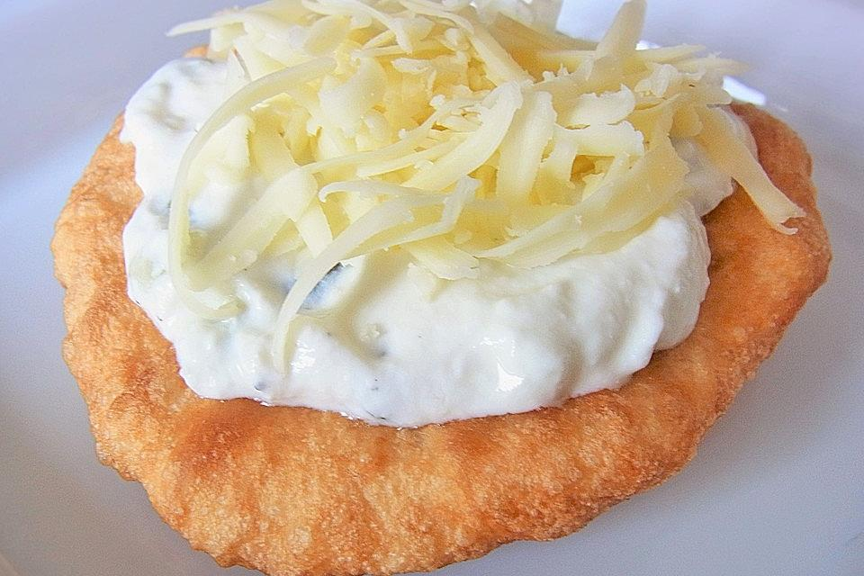

Lángos

Description
Lángos is a lovely traditional Hungarian dish.
You can eat it with every imaginable topping; however, it tastes best with food similar to cheese because the
dough is "quite salty".
You can find the original recipe here.
Ingredients
- 500 g flour
- 7 g dry yeast
- 1 tbsp salt
- 400 ml water, lukewarm
Steps
- Put all ingredients in a bowl and mix until a smooth dough is formed.
- Afterwards, cover the bowl and place it in a warm area for about 25 minutes.
- Pull apart fist-sized pieces of dough the size of a plate.
- Add oil to a pan and put the Lángos into the hot oil.
- After a minute, change the side to get a golden brown crust.
Back